<!DOCTYPE html>
<html lang="en">
<head>
<meta charset="utf-8">
<meta name="viewport" content="width=device-width, initial-scale=1">
<title>Alumni — BISPL @ KAIST</title>
<meta name="description" content="BISPL @ KAIST — BioImaging, Signal Processing & Machine Learning Lab, led by Prof. Jong Chul Ye.">
<link rel="stylesheet" href="assets/style.css">
</head>
<body>
<header class="site-header">
  <div class="wrap nav">
    <a class="brand" href="index.html">BISPL <small>@ KAIST</small></a>
    <button class="nav-toggle" aria-label="menu" onclick="document.getElementById('nav').classList.toggle('open')">&#9776;</button>
    <nav class="nav-links" id="nav"><a href="index.html">Home</a><a href="professor.html">Professor</a><a href="members.html">Members</a><a href="alumni.html" class="active">Alumni</a><a href="research.html">Research</a><a href="publications.html">Publications</a><a href="awards.html">Hall of Fame</a></nav>
  </div>
</header>

<main>

<div class="wrap page-head">
  <h1>Alumni</h1>
  <p>Former BISPL members now leading in academia, industry, and medicine worldwide.</p>
</div>
<section style="padding-top:22px"><div class="wrap">
<h2 class="group-title">Academia <span class="count-pill">· 19</span></h2>
<div class="grid cols-3">
<div class="card alum"><div><h3 style="font-size:16px;margin:0 0 4px">Yujin Oh</h3><p style="color:var(--muted);margin:0;font-size:13px">PhD (2024.2) --&gt; Harvard Univ. · Assistant Professor · Yonsei University</p></div></div>
<div class="card alum"><div><h3 style="font-size:16px;margin:0 0 4px">Kwanyoung Kim</h3><p style="color:var(--muted);margin:0;font-size:13px">PhD (2024.8) --&gt; Samsung Research · Assistant Professor · GIST · (Gwangju Institute of Science &amp; Technology)</p></div></div>
<div class="card alum">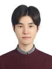<div><h3 style="font-size:16px;margin:0 0 4px">Soobin Um</h3><p style="color:var(--muted);margin:0;font-size:13px">PhD (2025.8) · Assistant Professor · Kookmin University</p></div></div>
<div class="card alum"><div><h3 style="font-size:16px;margin:0 0 4px">Boah Kim</h3><p style="color:var(--muted);margin:0;font-size:13px">PhD (2023.2) --&gt; NIH · Assistant Professor · Sungkyunkwan University</p></div></div>
<div class="card alum">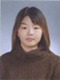<div><h3 style="font-size:16px;margin:0 0 4px">Kangjoo Lee</h3><p style="color:var(--muted);margin:0;font-size:13px">M.S. (2011.2) --&gt; McGuill Univ (PhD) · Assistant Professor · Florida International University (FIU)</p></div></div>
<div class="card alum"><div><h3 style="font-size:16px;margin:0 0 4px">Sangjoon Park, MD</h3><p style="color:var(--muted);margin:0;font-size:13px">Ph.D. (2023.2) · Assistant Professor · Yonsei University Medical School</p></div></div>
<div class="card alum">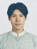<div><h3 style="font-size:16px;margin:0 0 4px">Yoseob Han</h3><p style="color:var(--muted);margin:0;font-size:13px">Ph.D (2019. 6) --&gt; Los Alamos National Lab · --&gt; Havard Univ. · Assistant Professor · Soongsil University, Korea</p></div></div>
<div class="card alum">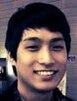<div><h3 style="font-size:16px;margin:0 0 4px">Kyong Hwan Jin</h3><p style="color:var(--muted);margin:0;font-size:13px">Ph.D. (2015.2) --&gt;EPFL --&gt; DGIST · Associate Professor · Korea University</p></div></div>
<div class="card alum">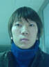<div><h3 style="font-size:16px;margin:0 0 4px">Minwoo Kim</h3><p style="color:var(--muted);margin:0;font-size:13px">M.S. (2009.2) --&gt; PhD (UIUC) · Assistant Professor · Pusan National University</p></div></div>
<div class="card alum"><div><h3 style="font-size:16px;margin:0 0 4px">Shujaat Khan</h3><p style="color:var(--muted);margin:0;font-size:13px">Ph.D. (2022) --&gt; Siemens Research USA · Assistant Professor · King Fahd University of Petroleum and Minerals (KFUPM), · Saudi Arabia</p></div></div>
<div class="card alum">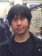<div><h3 style="font-size:16px;margin:0 0 4px">Paul Han</h3><p style="color:var(--muted);margin:0;font-size:13px">M.S. (2013.2) · Assistance Professor · Yale University Medical School</p></div></div>
<div class="card alum"><div><h3 style="font-size:16px;margin:0 0 4px">Sharad Gupta</h3><p style="color:var(--muted);margin:0;font-size:13px">Postdoc (2006-2007) · Professor · Indian Institute of Technology (IIT), Gandhinagar · India</p></div></div>
<div class="card alum"><div><h3 style="font-size:16px;margin:0 0 4px">Eunju Cha</h3><p style="color:var(--muted);margin:0;font-size:13px">PhD (2021.2) --&gt; Samsung SAIT · Assistant Professor · Sookmyung Women's University</p></div></div>
<div class="card alum">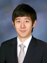<div><h3 style="font-size:16px;margin:0 0 4px">Byung-Hoon Kim, MD</h3><p style="color:var(--muted);margin:0;font-size:13px">PhD (2021.2) · Clinical Assistant Professor · Yonsei Severance Hospital</p></div></div>
<div class="card alum">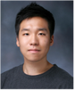<div><h3 style="font-size:16px;margin:0 0 4px">Jaejun Yoo</h3><p style="color:var(--muted);margin:0;font-size:13px">Ph.D (2018.2) --&gt; Naver --&gt; EPFL · Associate Professor · UNIST, Korea</p></div></div>
<div class="card alum">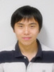<div><h3 style="font-size:16px;margin:0 0 4px">Huisu Yoon</h3><p style="color:var(--muted);margin:0;font-size:13px">Ph.D. (2015.2) --&gt;Samsung Medicine · Associate Professor · Ulsan University</p></div></div>
<div class="card alum">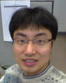<div><h3 style="font-size:16px;margin:0 0 4px">Okkyun Lee</h3><p style="color:var(--muted);margin:0;font-size:13px">Ph.D. (2014.2) --&gt; Johns Hopkins Univ. · Assistant Professor · DGIST</p></div></div>
<div class="card alum">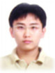<div><h3 style="font-size:16px;margin:0 0 4px">Kyungsang Kim</h3><p style="color:var(--muted);margin:0;font-size:13px">Ph.D. (2014.8) · Assistant Professor · Havard Medical School</p></div></div>
<div class="card alum"><div><h3 style="font-size:16px;margin:0 0 4px">Abdul Wahab</h3><p style="color:var(--muted);margin:0;font-size:13px">Research Professor (2016-2018) · Associate Professor · Sultan Qaboos University, Oman</p></div></div>
</div>
<h2 class="group-title">Further Study <span class="count-pill">· 12</span></h2>
<div class="grid cols-3">
<div class="card alum">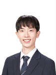<div><h3 style="font-size:16px;margin:0 0 4px">Bryan Sangwoo Kim</h3><p style="color:var(--muted);margin:0;font-size:13px">MS (2026. 2) · PhD Student · Stanford Univ. CS Dept. USA</p></div></div>
<div class="card alum"><div><h3 style="font-size:16px;margin:0 0 4px">Dr. Chamlee Cho</h3><p style="color:var(--muted);margin:0;font-size:13px">Postdoc (2025-2026) · Postdoc · Samsung Medical Center</p></div></div>
<div class="card alum">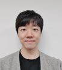<div><h3 style="font-size:16px;margin:0 0 4px">WonJun Kim</h3><p style="color:var(--muted);margin:0;font-size:13px">MS (2025.8) · PhD Student · EPFL</p></div></div>
<div class="card alum">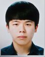<div><h3 style="font-size:16px;margin:0 0 4px">Gyutaek Oh</h3><p style="color:var(--muted);margin:0;font-size:13px">PhD (2025.2) · Postdoc, Yonsei School of Medicine</p></div></div>
<div class="card alum">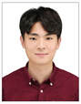<div><h3 style="font-size:16px;margin:0 0 4px">Uiyun Kim</h3><p style="color:var(--muted);margin:0;font-size:13px">MS (2024.2) · PhD Student, KAIST</p></div></div>
<div class="card alum">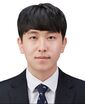<div><h3 style="font-size:16px;margin:0 0 4px">Gwanghyun Kim</h3><p style="color:var(--muted);margin:0;font-size:13px">MS (2022.2) · Ph.D Student, SNU</p></div></div>
<div class="card alum">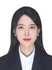<div><h3 style="font-size:16px;margin:0 0 4px">Cristina Eunbee Cho, MD</h3><p style="color:var(--muted);margin:0;font-size:13px">MS (2026.2) · Medical Doctor</p></div></div>
<div class="card alum"><div><h3 style="font-size:16px;margin:0 0 4px">Hyelin Nam</h3><p style="color:var(--muted);margin:0;font-size:13px">MS (2025.2) · PhD Student · University of Michigan, Ann Arbor</p></div></div>
<div class="card alum">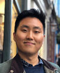<div><h3 style="font-size:16px;margin:0 0 4px">Hyoungjun “Peter" Park</h3><p style="color:var(--muted);margin:0;font-size:13px">Resaercher @ BISPL, 2020-2022 · MS. Neuroscience, ETH Zurich · BS. Brain and Cognitive Science, MIT · Ph.D student at EMBL, Germany</p></div></div>
<div class="card alum"><div><h3 style="font-size:16px;margin:0 0 4px">Finn Wolfreys</h3><p style="color:var(--muted);margin:0;font-size:13px">M.S. (2012.2) --&gt; Univ. Oxford (PhD) · Postdoc Researcher, UCSF</p></div></div>
<div class="card alum">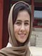<div><h3 style="font-size:16px;margin:0 0 4px">Maryam Ghahremani</h3><p style="color:var(--muted);margin:0;font-size:13px">M.S. (2013. 8) · Ph.D. Student · The University of Western Ontario, Canada</p></div></div>
<div class="card alum"><div><h3 style="font-size:16px;margin:0 0 4px">Deborah Martin</h3><p style="color:var(--muted);margin:0;font-size:13px">MS (2020. 6) · PhD Student, DGIST · BS. Computer Science</p></div></div>
</div>
<h2 class="group-title">Industry <span class="count-pill">· 57</span></h2>
<div class="grid cols-3">
<div class="card alum">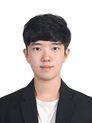<div><h3 style="font-size:16px;margin:0 0 4px">Hyungjin Chung</h3><p style="color:var(--muted);margin:0;font-size:13px">PhD (2025. 2) · EverEx, Inc.</p></div></div>
<div class="card alum">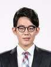<div><h3 style="font-size:16px;margin:0 0 4px">Junyoung Kim</h3><p style="color:var(--muted);margin:0;font-size:13px">PhD (2025.2) · Samsung Co.</p></div></div>
<div class="card alum"><div><h3 style="font-size:16px;margin:0 0 4px">Caruzzo Cedric Patrick Jean-Pierre</h3><p style="color:var(--muted);margin:0;font-size:13px">MS (2025.2) · Lunit Co.</p></div></div>
<div class="card alum">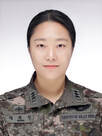<div><h3 style="font-size:16px;margin:0 0 4px">Heemin Jung</h3><p style="color:var(--muted);margin:0;font-size:13px">MS (2025.2) · Korean Military</p></div></div>
<div class="card alum">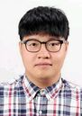<div><h3 style="font-size:16px;margin:0 0 4px">Gihyun Kwon</h3><p style="color:var(--muted);margin:0;font-size:13px">PhD (2024.8) · Krafton Inc.</p></div></div>
<div class="card alum">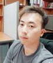<div><h3 style="font-size:16px;margin:0 0 4px">Sangmin Lee</h3><p style="color:var(--muted);margin:0;font-size:13px">PhD (2024.8) · Samsung Mobile</p></div></div>
<div class="card alum">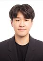<div><h3 style="font-size:16px;margin:0 0 4px">Jaemin Kim</h3><p style="color:var(--muted);margin:0;font-size:13px">M.S (2024.8) · Wrtn AI</p></div></div>
<div class="card alum">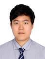<div><h3 style="font-size:16px;margin:0 0 4px">Chanyong Jung</h3><p style="color:var(--muted);margin:0;font-size:13px">PhD (2024.2) · Samsung Research · Sehui Kim · Graduate School of AI</p></div></div>
<div class="card alum"><div class="alum-photo alum-init">E[</div><div><h3 style="font-size:16px;margin:0 0 4px">E-mail: [email protected]</h3><p style="color:var(--muted);margin:0;font-size:13px">BS. BE Korea University</p></div></div>
<div class="card alum">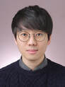<div><h3 style="font-size:16px;margin:0 0 4px">Joonyoung Song</h3><p style="color:var(--muted);margin:0;font-size:13px">Ph.D. (2022.8) · Samsung Electronics.</p></div></div>
<div class="card alum">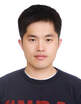<div><h3 style="font-size:16px;margin:0 0 4px">Junghyun Lee</h3><p style="color:var(--muted);margin:0;font-size:13px">MS (2020. 6) · Samsung Electronics.</p></div></div>
<div class="card alum">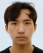<div><h3 style="font-size:16px;margin:0 0 4px">Hyeonho Jeong</h3><p style="color:var(--muted);margin:0;font-size:13px">MS (2025. 8) · Adobe Research, UK</p></div></div>
<div class="card alum"><div><h3 style="font-size:16px;margin:0 0 4px">Ara Seo</h3><p style="color:var(--muted);margin:0;font-size:13px">MS (2025. 8)</p></div></div>
<div class="card alum"><div><h3 style="font-size:16px;margin:0 0 4px">Serin Yang</h3><p style="color:var(--muted);margin:0;font-size:13px">PhD (2025.2) · Samsung Co.</p></div></div>
<div class="card alum"><div><h3 style="font-size:16px;margin:0 0 4px">Naeun Ko</h3><p style="color:var(--muted);margin:0;font-size:13px">MS (2025.2) · Naver Corporation</p></div></div>
<div class="card alum"><div><h3 style="font-size:16px;margin:0 0 4px">Inhwa Han</h3><p style="color:var(--muted);margin:0;font-size:13px">PhD (2025.2)</p></div></div>
<div class="card alum">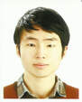<div><h3 style="font-size:16px;margin:0 0 4px">Byeongsu Sim</h3><p style="color:var(--muted);margin:0;font-size:13px">PhD (2024. 8) · Samsung Research</p></div></div>
<div class="card alum">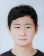<div><h3 style="font-size:16px;margin:0 0 4px">Jaeyoung Huh</h3><p style="color:var(--muted);margin:0;font-size:13px">PhD (2024.2) · Siemens Corporate Research · Princeton, USA</p></div></div>
<div class="card alum">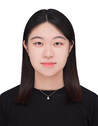<div><h3 style="font-size:16px;margin:0 0 4px">Hyokyoung Bae</h3><p style="color:var(--muted);margin:0;font-size:13px">M.S.; (2023.2) · Samsung Research</p></div></div>
<div class="card alum">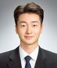<div><h3 style="font-size:16px;margin:0 0 4px">Dohoon Ryu</h3><p style="color:var(--muted);margin:0;font-size:13px">M.S. (2023.2) · SK Telecom</p></div></div>
<div class="card alum"><div><h3 style="font-size:16px;margin:0 0 4px">Woon Kyung Sung</h3><p style="color:var(--muted);margin:0;font-size:13px">MS (2021.2) · Voroni.io</p></div></div>
<div class="card alum">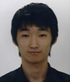<div><h3 style="font-size:16px;margin:0 0 4px">Dongwook Lee</h3><p style="color:var(--muted);margin:0;font-size:13px">Ph.D (2019. 6) · Samsung Electronics</p></div></div>
<div class="card alum">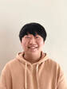<div><h3 style="font-size:16px;margin:0 0 4px">Hyunjong Kim</h3><p style="color:var(--muted);margin:0;font-size:13px">MS (2021.2) · DRTECH Co.</p></div></div>
<div class="card alum"><div><h3 style="font-size:16px;margin:0 0 4px">Joo Won Lim</h3><p style="color:var(--muted);margin:0;font-size:13px">M.S. (2016.2) · Ph.D. (2020) EPFL · Microsoft Research Cambridge · UK</p></div></div>
<div class="card alum">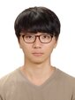<div><h3 style="font-size:16px;margin:0 0 4px">Jawook Gu</h3><p style="color:var(--muted);margin:0;font-size:13px">PhD (2021.2) · Samsung Research</p></div></div>
<div class="card alum">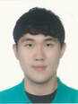<div><h3 style="font-size:16px;margin:0 0 4px">Sungjun Lim</h3><p style="color:var(--muted);margin:0;font-size:13px">Samsung Research</p></div></div>
<div class="card alum">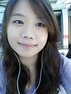<div><h3 style="font-size:16px;margin:0 0 4px">Juyoung Lee</h3><p style="color:var(--muted);margin:0;font-size:13px">Ph.D (2019. 6) · Samsung Inst. of Technology (SAIT)</p></div></div>
<div class="card alum"><div class="alum-photo alum-init">YY</div><div><h3 style="font-size:16px;margin:0 0 4px">Yeohun Yoon</h3><p style="color:var(--muted);margin:0;font-size:13px">M.S. (2018.2) · AI Venture Company</p></div></div>
<div class="card alum">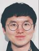<div><h3 style="font-size:16px;margin:0 0 4px">Heejoon Koo</h3><p style="color:var(--muted);margin:0;font-size:13px">Research Intern · AI Venture</p></div></div>
<div class="card alum">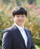<div><h3 style="font-size:16px;margin:0 0 4px">Joonhyung Lee</h3><p style="color:var(--muted);margin:0;font-size:13px">MS (2020. 6) · Vuno Co.</p></div></div>
<div class="card alum">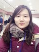<div><h3 style="font-size:16px;margin:0 0 4px">Eunhee Kang</h3><p style="color:var(--muted);margin:0;font-size:13px">Ph.D (2019. 6) · Samsung Inst. of Technology (SAIT)</p></div></div>
<div class="card alum">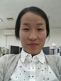<div><h3 style="font-size:16px;margin:0 0 4px">Hyoryang Kim</h3><p style="color:var(--muted);margin:0;font-size:13px">M.S. (2018.2) · Lieutenant Commander · Korean Army</p></div></div>
<div class="card alum">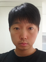<div><h3 style="font-size:16px;margin:0 0 4px">Woong Bae</h3><p style="color:var(--muted);margin:0;font-size:13px">M.S.(2017.8) · Kakao Brain · Chief Officer, Medical Business</p></div></div>
<div class="card alum"><div><h3 style="font-size:16px;margin:0 0 4px">Yeong Sik Kim</h3><p style="color:var(--muted);margin:0;font-size:13px">M.S.(2017.2) · AI Venture Compnay</p></div></div>
<div class="card alum"><div><h3 style="font-size:16px;margin:0 0 4px">Jaehyun Nam</h3><p style="color:var(--muted);margin:0;font-size:13px">M.S. (2013.2) · AI venture company</p></div></div>
<div class="card alum">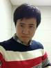<div><h3 style="font-size:16px;margin:0 0 4px">Yohan Lee</h3><p style="color:var(--muted);margin:0;font-size:13px">M.S. (2013.2) · AI venture company</p></div></div>
<div class="card alum"><div><h3 style="font-size:16px;margin:0 0 4px">Jun Hong Min</h3><p style="color:var(--muted);margin:0;font-size:13px">Ph.D. (2016.5) · Samsung Electronics Co.</p></div></div>
<div class="card alum"><div><h3 style="font-size:16px;margin:0 0 4px">Minji Lee</h3><p style="color:var(--muted);margin:0;font-size:13px">Ph.D. (2015.8)</p></div></div>
<div class="card alum"><div><h3 style="font-size:16px;margin:0 0 4px">Arshi Khalid</h3><p style="color:var(--muted);margin:0;font-size:13px">Ph.D. (2015.2) · Now in Pakistan</p></div></div>
<div class="card alum"><div><h3 style="font-size:16px;margin:0 0 4px">Jeonghyeon Lee</h3><p style="color:var(--muted);margin:0;font-size:13px">M.S. (2013.2) · Korea Hydro &amp; Nuclear Power Co.</p></div></div>
<div class="card alum">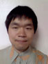<div><h3 style="font-size:16px;margin:0 0 4px">Jongmin Kim</h3><p style="color:var(--muted);margin:0;font-size:13px">Post Doc. (2013.2) · Professor at Korea Science Academy of KAIST</p></div></div>
<div class="card alum"><div><h3 style="font-size:16px;margin:0 0 4px">Jinwook Jung</h3><p style="color:var(--muted);margin:0;font-size:13px">Ph.D. (2012.2) · Samsung Electronics Co. · Health &amp; Medical Equpment (HME)</p></div></div>
<div class="card alum"><div><h3 style="font-size:16px;margin:0 0 4px">Sungho Tak</h3><p style="color:var(--muted);margin:0;font-size:13px">Ph.D. (2011.7) · Senior Researcher · KBSI</p></div></div>
<div class="card alum"><div><h3 style="font-size:16px;margin:0 0 4px">Hong Jung</h3><p style="color:var(--muted);margin:0;font-size:13px">Ph.D. (2011.2) · CTO at HDX-Willmed Co.</p></div></div>
<div class="card alum"><div><h3 style="font-size:16px;margin:0 0 4px">Younghan Oh</h3><p style="color:var(--muted);margin:0;font-size:13px">M.S. (2011.2)</p></div></div>
<div class="card alum">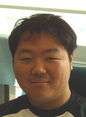<div><h3 style="font-size:16px;margin:0 0 4px">Jaeheung Yoo</h3><p style="color:var(--muted);margin:0;font-size:13px">M.S. (2008.2) · Medical Doctor · Samsung Medical Center · Nuclear Medicine</p></div></div>
<div class="card alum"><div><h3 style="font-size:16px;margin:0 0 4px">Jinhee Kim</h3><p style="color:var(--muted);margin:0;font-size:13px">Undergraduate trainee · Medical Doctor · Seoul National University Medical School</p></div></div>
<div class="card alum">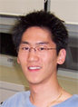<div><h3 style="font-size:16px;margin:0 0 4px">Jaeyun Cho</h3><p style="color:var(--muted);margin:0;font-size:13px">Undergraduate trainee · Ph.D. at Dept. of Univ. California, Berkeley · Now patent laywer at Boston</p></div></div>
<div class="card alum">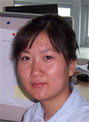<div><h3 style="font-size:16px;margin:0 0 4px">Daria</h3><p style="color:var(--muted);margin:0;font-size:13px">Undergraduate exchange student · Happily married with Sharad Gupta and lives in India</p></div></div>
<div class="card alum"><div><h3 style="font-size:16px;margin:0 0 4px">Jiyoung Choi</h3><p style="color:var(--muted);margin:0;font-size:13px">Ph.D. (2012.2) · SK Telecom</p></div></div>
<div class="card alum"><div><h3 style="font-size:16px;margin:0 0 4px">Sehi Lee</h3><p style="color:var(--muted);margin:0;font-size:13px">M.S. (2012.2) · M.D. Student · Catholic University of Medicine</p></div></div>
<div class="card alum">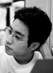<div><h3 style="font-size:16px;margin:0 0 4px">Jaeduck Jang</h3><p style="color:var(--muted);margin:0;font-size:13px">Ph.D. (2011.7) · Samsung Advanced Institute of Technology</p></div></div>
<div class="card alum">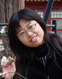<div><h3 style="font-size:16px;margin:0 0 4px">Hua Li</h3><p style="color:var(--muted);margin:0;font-size:13px">M.S. (2011.7) · Senior Scientist, Bio-Rad Laboratories · CA, USA</p></div></div>
<div class="card alum"><div><h3 style="font-size:16px;margin:0 0 4px">Kwangeun Jang</h3><p style="color:var(--muted);margin:0;font-size:13px">M.S. (2009.2) · Ph.D student · Stanford University</p></div></div>
<div class="card alum"><div><h3 style="font-size:16px;margin:0 0 4px">Suyeon Lee</h3><p style="color:var(--muted);margin:0;font-size:13px">M.S. (2009.2) · MD Student · Yonsei University School of Medicine</p></div></div>
<div class="card alum"><div><h3 style="font-size:16px;margin:0 0 4px">Liu yu</h3><p style="color:var(--muted);margin:0;font-size:13px">M.S. (2007.2) · MBA from Duke University · Now working for Lenova, USA</p></div></div>
<div class="card alum"><div><h3 style="font-size:16px;margin:0 0 4px">Hyunjoon Ahn</h3><p style="color:var(--muted);margin:0;font-size:13px">M.S. (2010.2) · Ph.D (SNU) · Vuno Co.</p></div></div>
</div>
<h2 class="group-title">Visiting Faculty <span class="count-pill">· 6</span></h2>
<div class="grid cols-3">
<div class="card alum"><div><h3 style="font-size:16px;margin:0 0 4px">Eun Sun Lee, MD/Ph.D</h3><p style="color:var(--muted);margin:0;font-size:13px">Visiting Professor · (2021.9-2022.8) · Associate Professor · Department of Radiology · Chungang University Hospital</p></div></div>
<div class="card alum"><div><h3 style="font-size:16px;margin:0 0 4px">Hyungjung Park, MD, PhD</h3><p style="color:var(--muted);margin:0;font-size:13px">Visiting Professor · (2023.1-2024.1) · Dept. of Radiology · School of Medicine · Chung Ang University</p></div></div>
<div class="card alum"><div><h3 style="font-size:16px;margin:0 0 4px">Woo Hee Choi , MD, Ph.D</h3><p style="color:var(--muted);margin:0;font-size:13px">Visiting Professor · (2023.9-2024.8) · Division of Nuclear Medicine, Department of Radiology, · St. Vincent’s Hospital · College of Medicine, · The Catholic University of Korea</p></div></div>
<div class="card alum"><div><h3 style="font-size:16px;margin:0 0 4px">Jeong Eun Lee, MD/Ph.D</h3><p style="color:var(--muted);margin:0;font-size:13px">Visiting Professor · (2022.3-2023.2) · Associate Professor · Department of Radiology · Chungnam National University Hospital</p></div></div>
<div class="card alum"><div><h3 style="font-size:16px;margin:0 0 4px">Tae Hoon Roh , MD, PhD</h3><p style="color:var(--muted);margin:0;font-size:13px">Visiting Professor · (2024.3-2024.8) · Department of Neurosurgery, · Ajou University School of Medicine</p></div></div>
<div class="card alum"><div><h3 style="font-size:16px;margin:0 0 4px">Cheong-Il Shin , MD, PhD</h3><p style="color:var(--muted);margin:0;font-size:13px">Visiting Professor · (2023.9-2024.8) · Department of Radiology · College of Medicine · Seoul National University</p></div></div>
</div>
</div></section>
</main>
<footer class="site-footer">
  <div class="wrap foot-grid">
    <div>
      <h4>BISPL @ KAIST</h4>
      <p>BioImaging, Signal Processing &amp; machine Learning laboratory.<br>
      Kim Jaechul Graduate School of AI, KAIST.</p>
      <p>N5 Building, Room 2221<br>291 Daehak-ro, Yuseong-gu, Daejeon 34141, Korea</p>
    </div>
    <div>
      <h4>Navigate</h4>
      <ul><li><a href="index.html">Home</a></li><li><a href="professor.html">Professor</a></li><li><a href="members.html">Members</a></li><li><a href="alumni.html">Alumni</a></li><li><a href="research.html">Research</a></li><li><a href="publications.html">Publications</a></li><li><a href="awards.html">Hall of Fame</a></li></ul>
    </div>
    <div>
      <h4>Links</h4>
      <ul>
        <li><a href="https://scholar.google.com/citations?user=HNMjoNEAAAAJ">Google Scholar</a></li>
        <li><a href="https://arxiv.org/a/ye_j_1">arXiv Papers</a></li>
        <li><a href="https://github.com/bispl-website">GitHub</a></li>
      </ul>
    </div>
  </div>
  <div class="wrap foot-bottom">© 2026 BISPL @ KAIST. All rights reserved. · Migrated from bispl.weebly.com</div>
</footer>
</body>
</html>